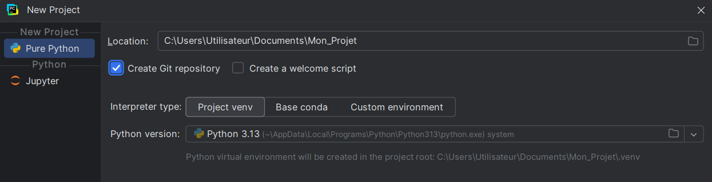

Créer l'environnement du projet
PyCharm permet de créer automatiquement l'environnement virtuel au moment de la création du projet. Il faut vérifier que le bon interpréteur Python est sélectionné et cocher la case de création du repo GitHub.

Installer Django
-
Une fois l'environnement virtuel activé, on peut installer Django
avec pip.
On peut aussi installer une version précise si on veut garantir un comportement identique d'un projet à l'autre.pip install djangopip install django==5.2 -
On installe ensuite les autres bibliothèques utiles :
Pour afficher les bibliothèques installées dans l'environnement virtuel :pip install my_librarypip list -
On enregistre les dépendances du projet dans requirements.txt :
Ce fichier est utile pour recréer le projet plus tard ou sur une autre machine. On utilise alors la commande :pip freeze > requirements.txtpip install -r requirements.txt
Créer le projet avec django-admin
Une fois Django installé et l'environnement virtuel activé, on peut créer un nouveau projet.
django-admin startproject config .Après l'initialisation, il y a plusieurs fichiers de base dans le projet :
Mon_Projet
│
├── .venv/ l'environnement virtuel
│
├── config le dossier du projet
│ │
│ ├── __init__.py indique que le dossier est un package Python
│ ├── asgi.py sert au déploiement et à l'exécution du projet
│ ├── settings.py contient les paramètres du projet
│ ├── urls.py contient les routes principales du site
│ └── wsgi.py sert au déploiement et à l'exécution du projet
│
├── manage.py permet d'exécuter les commandes Django du projet
└── requirements.txt contient la liste des bibliothèques utilisées dans le projetAjouter les dossiers en prévision
À la racine du projet, ajouter les dossiers nécessaires pour obtenir la structure suivante :
Mon_Projet/
│
├── .venv/
│
├── config/
│ ├── __init__.py
│ ├── settings.py
│ ├── urls.py
│ ├── asgi.py
│ └── wsgi.py
│
├── apps/ contiendra les applications
├── templates/ contiendra les templates (html)
├── media/ contiendra les fichiers fournis par l'utilisateur
├── static/ contiendra les fichiers statiques (css, js, images, vidéos, ...)
│
├── manage.py
└── requirements.txtErreurs fréquentes
- Installer Django hors de l'environnement virtuel : le projet n'utilise pas la bonne installation.
- Utiliser un interpréteur Python incorrect dans PyCharm : les paquets semblent installés mais ne sont pas disponibles dans le projet.
- Ne pas figer les dépendances : difficile de recréer exactement le même environnement plus tard.
- Créer le projet dans un mauvais dossier : arborescence confuse.